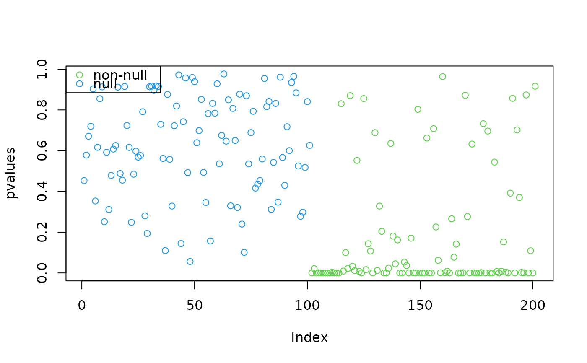
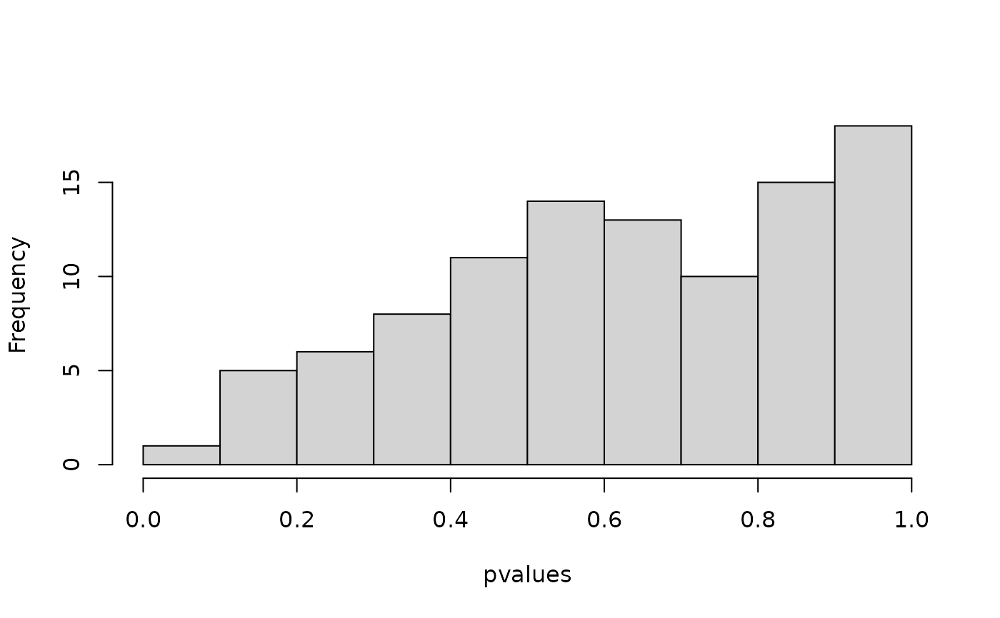
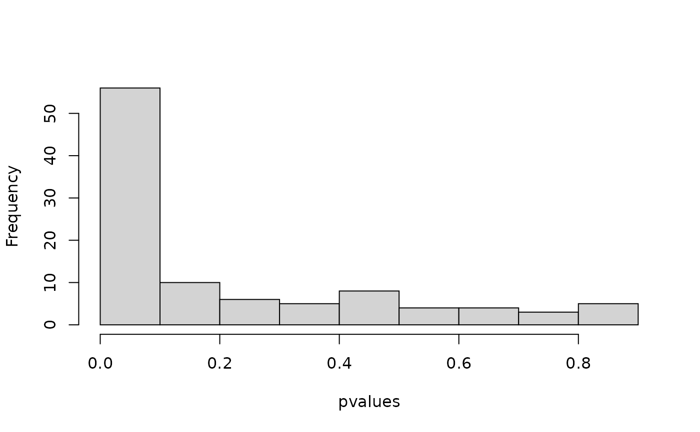

Calibrated RUV4 where the control genes are used to estimate hidden confounders and a variance inflation parameter.
Source:R/ruv4.R
vruv4.RdThis function will perform a variant of Removing Unwanted Variation 4-step (RUV4) (Gagnon-Bartsch et al, 2013) where the control genes are used not only to estimate the hidden confounders, but to estimate a variance inflation parameter. This variance inflation step is akin to the "empirical null" approach of Efron (2004).
vruv4(Y, X, ctl, k = NULL, cov_of_interest = ncol(X), likelihood = c("t", "normal"), limmashrink = TRUE, degrees_freedom = NULL, include_intercept = TRUE, gls = TRUE, fa_func = pca_naive, fa_args = list(), adjust_bias = FALSE)
Arguments
| Y | A matrix of numerics. These are the response variables where each column has its own variance. In a gene expression study, the rows are the individuals and the columns are the genes. |
|---|---|
| X | A matrix of numerics. The covariates of interest. |
| ctl | A vector of logicals of length |
| k | A non-negative integer.The number of unobserved confounders. If not specified and the R package sva is installed, then this function will estimate the number of hidden confounders using the methods of Buja and Eyuboglu (1992). |
| cov_of_interest | A vector of positive integers. The column numbers of the covariates in X whose coefficients you are interested in. The rest are considered nuisance parameters and are regressed out by OLS. |
| likelihood | Either |
| limmashrink | A logical. Should we apply hierarchical
shrinkage to the variances ( |
| degrees_freedom | if |
| include_intercept | A logical. If |
| gls | A logical. Should we use generalized least squares
( |
| fa_func | A factor analysis function. The function must have
as inputs a numeric matrix |
| fa_args | A list. Additional arguments you want to pass to fa_func. |
| adjust_bias | A logical. Should we also use the control genes
to adjust for bias ( |
Value
A list whose elements are:
multiplier A numeric. The estimated variance inflation
parameter.
betahat_ols A vector of numerics. The ordinary least
squares estimates of the coefficients of the covariate of
interest. This is when not including the estimated confounding
variables.
sebetahat_ols A vector of positive numerics. The
pre-inflation standard errors of ruv$betahat (NOT
ruv$betahat_ols).
betahat A matrix of numerics. The ordinary least squares
estimates of the coefficients of the covariate of interest WHEN
YOU ALSO INCLUDE THE ESTIMATES OF THE UNOBSERVED CONFOUNDERS.
sebetahat A matrix of positive numerics. This is equal
to sebethat_ols * sqrt(multiplier). This is the
post-inflation adjusted standard errors for ruv$betahat.
tstats A vector of numerics. The t-statistics for
testing against the null hypothesis of the coefficient of the
covariate of interest being zero. This is after estimating the
variance inflation parameter.
pvalues A vector of numerics. The p-values of said test
above.
alphahat A matrix of numerics. The estimates of the
coefficients of the hidden confounders. Only identified up to a
rotation on the rowspace.
Zhat A matrix of numerics. The estimates of the
confounding variables. Only identified up to a rotation on the
columnspace.
sigma2 A vector of positive numerics. The estimates of
the variances PRIOR to inflation.
sigma2_adjusted A vector of positive numerics. The
estimates of the variances AFTER to inflation. This is equal to
sigma2 * multiplier.
mult_matrix A matrix of numerics. Equal to
solve(t(R22) %*% R22). One multiplies sigma2 or
simga2_adjused by the diagonal elements of
mult_matrix to get the standard errors of
betahat.
degrees_freedom The degrees of freedom. If
likelihood = "t", then this was the degrees of freedom
used.
R22 A matrix of numerics numeric. This is the submatrix
of the R in the QR decomposition of X that corresponds to the
covariates of interest. This is mostly returned for debugging
purposes and may be removed in the future.
Z2 A matrix of numerics of length 1. This is the
estimated confounders (after a rotation). Not useful on it's
own and is mostly returned for debugging purposes. It may be
removed in the future.
Details
The model is $$Y = XB + ZA + E,$$ where \(Y\) is a matrix of responses (e.g. log-transformed gene expression levels), \(X\) is a matrix of covariates, \(B\) is a matrix of coefficients, \(Z\) is a matrix of unobserved confounders, \(A\) is a matrix of unobserved coefficients of the unobserved confounders, and \(E\) is the noise matrix where the elements are independent Gaussian and each column shares a common variance. The rows of \(Y\) are the observations (e.g. individuals) and the columns of \(Y\) are the response variables (e.g. genes).
This model is fit using a two-step approach proposed in Gagnon-Bartsch et al (2013) and described in Wang et al (2015), modified to include estimating a variance inflation parameter. An additional modification is to use a t-likelihood in the second step of the procedure, improving robustness to model misspecification.
For instructions and examples on how to specify your own factor analysis, run the following code in R:
utils::vignette("customFA", package = "vicar"). If it doesn't work, then you probably haven't built
the vignettes. To do so, see https://github.com/dcgerard/vicar#vignettes.
References
Gagnon-Bartsch, J., Laurent Jacob, and Terence P. Speed. "Removing unwanted variation from high dimensional data with negative controls." Berkeley: Department of Statistics. University of California (2013).
Andreas Buja and Nermin Eyuboglu. "Remarks on parallel analysis." Multivariate behavior research, 27(4):509-540, 1992.
Bradley Efron "Large-Scale Simultaneous Hypothesis Testing: The Choice of a Null Hypothesis", Journal of the American Statistical Association, 99:465, 96-104, 2004.
Wang, J., Zhao, Q., Hastie, T., & Owen, A. B "Confounder Adjustment in Multiple Hypotheses Testing." arXiv preprint arXiv:1508.04178 (2015).
See also
ruv3 for a version of RUV4 that can also be considered a version of RUV2.
RUV4 For the version of RUV4 in the ruv package.
cate For the version of RUV4 in the cate package.
Examples
library(vicar) ## Generate data and controls --------------------------------------------- set.seed(1327) n <- 13 p <- 201 k <- 2 q <- 3 is_null <- rep(FALSE, length = p) is_null[1:101] <- TRUE ctl <- rep(FALSE, length = p) ctl[1:73] <- TRUE X <- matrix(stats::rnorm(n * q), nrow = n) B <- matrix(stats::rnorm(q * p), nrow = q) B[2, is_null] <- 0 Z <- X %*% matrix(stats::rnorm(q * k), nrow = q) + matrix(rnorm(n * k), nrow = n) A <- matrix(stats::rnorm(k * p), nrow = k) E <- matrix(stats::rnorm(n * p, sd = 1 / 2), nrow = n) Y <- X %*% B + Z %*% A + E ## Fit RUV4 assuming only second covariate is of interest ----------------- ruvout <- vruv4(Y = Y, X = X, ctl = ctl, k = k, include_intercept = FALSE, likelihood = "normal", cov_of_interest = 2) graphics::plot(ruvout$pvalue, col = is_null + 3, ylab = "pvalues")## Compare to linear model ------------------------------------------------ lmout <- coefficients(summary(stats::lm(Y ~ X))) lmp <- sapply(lmout, function(x) { x[3, 4] }) graphics::plot(lmp, col = is_null + 3, ylab = "pvalues")## Other ways to fit RUV4 from various packages ------------------------------ ruv4out <- cate::cate.fit(Y = Y, X.primary = X[, 2, drop = FALSE], X.nuis = X[, -2, drop = FALSE], r = k, fa.method = "pc", adj.method = "nc", nc = ctl, calibrate = FALSE, nc.var.correction = FALSE) vruv4out <- vruv4(Y = Y, X = X, k = k, cov_of_interest = 2, include_intercept = FALSE, ctl = ctl, limmashrink = FALSE, likelihood = "normal") vruv4ols <- vruv4(Y = Y, X = X, k = k, cov_of_interest = 2, include_intercept = FALSE, ctl = ctl, limmashrink = FALSE, likelihood = "normal", gls = FALSE) ruv4ols <- ruv::RUV4(Y = Y, X = X[, 2, drop = FALSE], Z = X[, -2, drop = FALSE], ctl = ctl, k = k) ruv4p <- ruv4out$beta.p.value vruv4p <- vruv4out$pvalues ruv4olsp <- ruv4ols$p vruv4olsp <- vruv4ols$pvalues ## These should be monotonically related ## They often aren't because CATE often returns p-values that are exactly 0. graphics::plot(ruv4p, vruv4p)#> [1] 0.9883652#> [1] 1